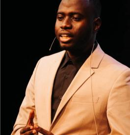

Master 2 — Droit public
Université Savoie Mont Blanc, Chambéry. Orientation vers la recherche juridique et la poursuite d’études doctorales.
Étudiant en Master 2 de droit public à l’Université Savoie Mont Blanc. Intéressé par les principes fondamentaux du droit, les libertés publiques et les approches comparées des systèmes juridiques.

Emplacement réservéMon parcours s’inscrit à la rencontre de la formation juridique, de la réflexion académique et de l’engagement collectif. Originaire du Tchad, je poursuis mes études en France avec un intérêt particulier pour les questions de droit public, de libertés fondamentales et de droit comparé.
Je souhaite développer une démarche de recherche rigoureuse, attentive à la fois aux constructions juridiques et à leurs implications concrètes dans la société. Mon ambition est de poursuivre cette réflexion dans le cadre d’un doctorat.
Université Savoie Mont Blanc, Chambéry. Orientation vers la recherche juridique et la poursuite d’études doctorales.
Enseignements en droit administratif, droit constitutionnel, droit de l’environnement, droit des contrats publics et droit de l’Union européenne.
Université Savoie Mont Blanc. Travaux consacrés notamment au domaine public et aux occupations commerciales.
Conservatoire national des arts et métiers (CNAM).
Gendarmerie nationale française.
Institut africain de développement économique et de planification (IDEP) et Organisation internationale pour les migrations (OIM).
Mes travaux portent sur l’articulation entre principes juridiques, action publique et libertés individuelles. Les travaux disponibles peuvent être lus directement en PDF ou téléchargés pour consultation.
Étude des conditions d’application de la laïcité dans le champ sportif, de ses limites et de ses interactions avec les normes internationales.
Réflexion sur l’occupation commerciale du domaine public, les autorisations, les redevances et les enjeux de gestion locale.
Étude de la construction juridique de la parité, depuis les principes d’égalité jusqu’aux mécanismes de représentation politique, et des limites de l’égal accès à l’exercice effectif du pouvoir.
Ouvrir l’étude intégrale (Word) ↗ · Télécharger le document Word
Accompagnement et encadrement des élèves, surveillance de l’internat, gestion de situations quotidiennes et participation à la vie éducative de l’établissement.
Participation à l’organisation des concours d’éloquence du lycée Vaugelas et aux jurys chargés d’évaluer les prestations des candidats.
Coordination d’activités, expression orale, rédaction institutionnelle et travail en équipe dans des contextes variés.
Engagement auprès des étudiants tchadiens de l’Université Savoie Mont Blanc et participation à la vie collective universitaire.
Lauréat du concours Antoine Favre de l’Université Savoie Mont Blanc en 2024 ; troisième place au concours « La Cause des Femmes » en 2024.
Participation à des initiatives de solidarité, d’intégration et d’échanges interculturels, ainsi qu’à l’accompagnement de projets d’éloquence.
Pour un échange académique, une collaboration de recherche, une proposition professionnelle ou une prise de contact, vous pouvez me joindre par les coordonnées qui seront ajoutées ici.